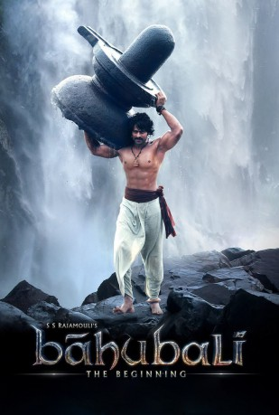

#3618 Bahubali 1 - The Beginning
 
 IMDB-Wertung: 8.4 / 10
IMDB-Wertung: 8.4 / 10  Metascore: 0
Metascore: 0 
Als kleines Baby im Fluss ausgesetzt, wächst Shivudu gut behütet bei seiner neuen Familie auf. Aus ihm wird ein junger, starker Mann mit ungeahnten Fähigkeiten. Per Zufall trifft er auf die Amazone Avanthika die es sich zum Ziel gemacht hat, die gefangen gehaltene Königin Devasena aus dem Königreich Mahishmati zu befreien. Auf deren Thron hat es sich der brutale Bhallala Deva bequem gemacht, der mit allen Mitteln an der Macht bleiben will. Shivudu macht sich mit Avanthika auf die Königin zu befreien, dabei enthüllt er eine tragische Wahrheit, die sein Schicksal in eine ganz neue Richtung lenkt.
Jahr: 2015
Dauer: 137 Minuten
FSK:
Land: Indien Studio: Splendid FilmTonspuren:
Untertitel:
Auflösung: 1080p (1920x856) Größe: 10065 MB
Genre: Action, Drama, Abenteuer, Krieg, Geschichte
Regisseur: S.S. Rajamouli
Drehbuch: Duncan Kennedy
Soundtrack:
Darsteller:
- Prabhas als Baahubali / Sivudu
- Rana Daggubati als Bhallaladeva
- Anushka Shetty als Devasena
- Tamannaah Bhatia als Avanthika
- Nasser als Bijjaladeva
- Ramya Krishnan als Sivagami
- Sudeep als Aslaam Khan
- Satyaraj als Kattappa
- Tanikella Bharani als Swamiji
- Nora Fatehi als
- Prabhakar als Kalakeya War Lord
- S.S. Rajamouli als Spirit Seller, Cameo
- Rohini als Sanga
- Subbaraya Sarma als
- Adivi Sesh als Bhadra
- Subbaraju als
- Venkat Vadisetti als Hero friend
- Rakesh Varre als Bhallaladeva's Soldier
- Scarlett Mellish Wilson als
Datei: X:\2-Dilogie(A-F)\Bahubali\Bahubali 1 - The Beginning (2015, FSK, 1920x856).mkv seit 10.05.2016
Festplatte: HD Collection-2(A-Z)-3(A-M)
 Alle Filme aus Gruppe '2-Dilogie(A-F)\Bahubali'
Alle Filme aus Gruppe '2-Dilogie(A-F)\Bahubali'